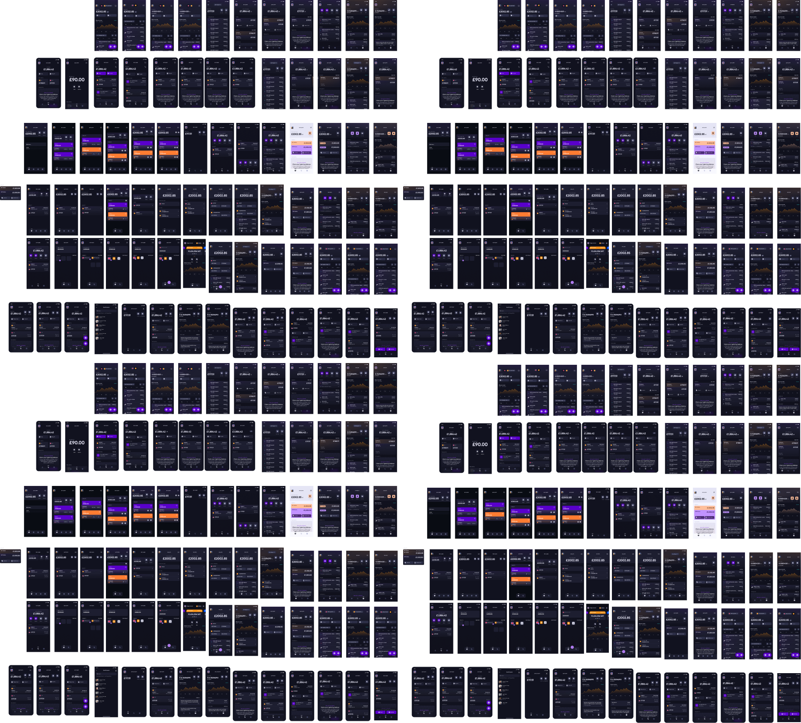
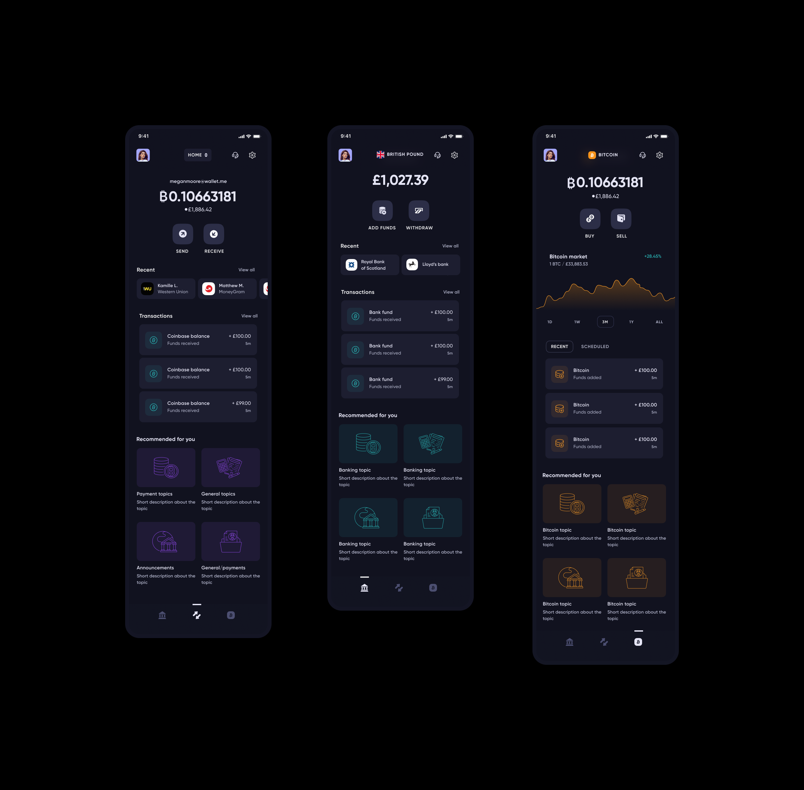
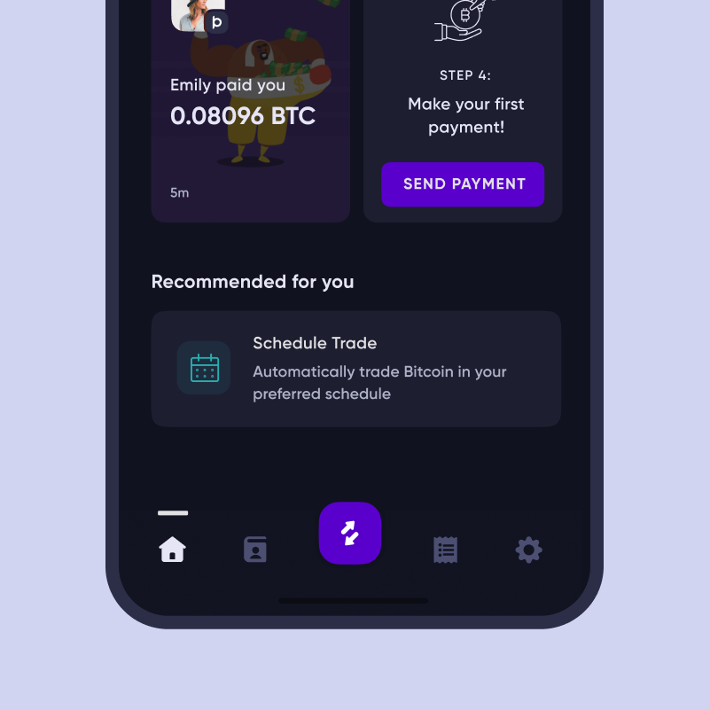
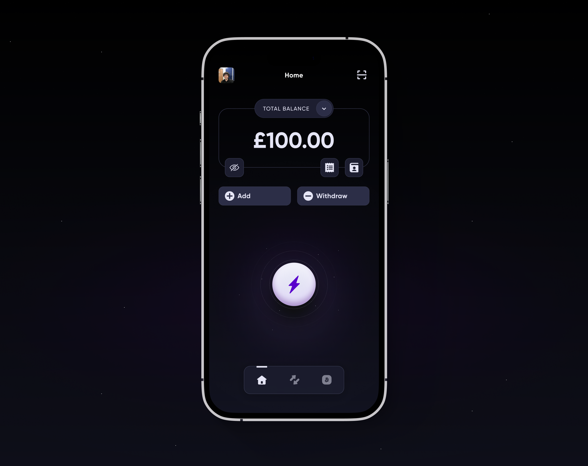

The app was approaching its second anniversary. New features had been added over time, and some had ended up in awkward or counterintuitive places. We had also learned a great deal about the product and our users in those two years.
Inspired by that learning and a shift in business direction, we refreshed the mobile app—using what we knew to build a clearer, more robust structure that could still accommodate future development.
As mentioned, we learned a lot in those years. The app had outgrown its original structure, and new features were becoming harder to add seamlessly. Below are some of our initial thoughts when approaching the project.
Once we had planned the restructure, we iterated through hundreds of potential screen designs and layouts. We explored different structures, but ultimately returned to the three-tab approach we started with.

Here's the initial proposal. The key change was splitting core functions into distinct screens by purpose—a clear improvement over the previous structure. It allowed us to separate features and give users a more useful hierarchy.
There was still work to do. Repeated information across screens felt redundant, and I wanted each screen to feel consistent without becoming interchangeable.

One concern with the redesign was losing the adhoc power button at the centre of the nav—a quick way for users to perform common actions. Reintroducing it while simplifying the nav to three tabs meant it would sit off-centre, which needed careful handling.

In the end I incorporated the adhoc action on the home screen. That let us simplify the home view to a balance at the top, shortcuts to contacts and transactions, and a revised power button as the focal point—giving users quick access to key features without cluttering the nav.
